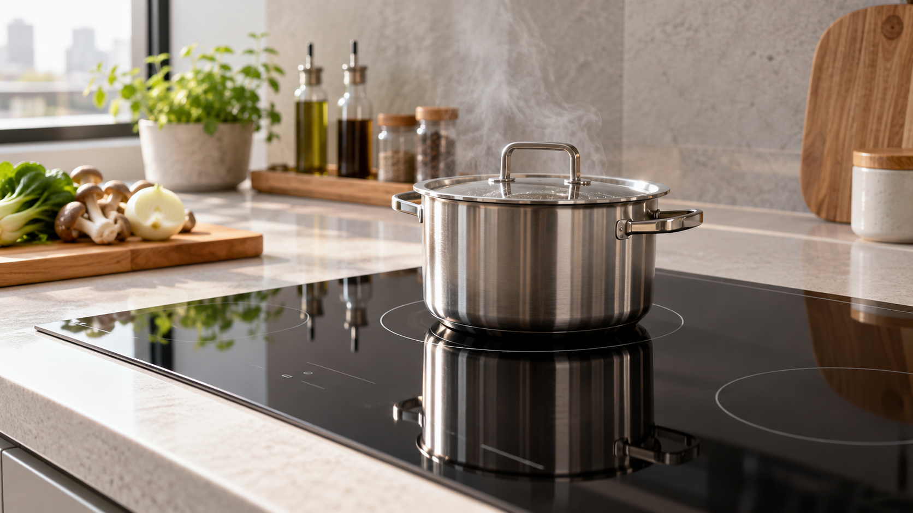

인덕션이 조리 중 꺼지면 먼저 자동 타이머인지, 용기 인식이 끊긴 것인지, 과열 보호나 전원 문제인지 구분하세요. 상판이 깨졌거나 타는 냄새·스파크·차단기 반복 작동이 있으면 즉시 사용을 중단합니다.
| 상태 | 먼저 확인 |
|---|---|
| 용기 표시가 깜빡임 | 자석이 붙는 바닥, 크기, 중앙 정렬 |
| 오래 가열한 뒤 꺼짐 | 흡입구 막힘과 과열 보호 |
| 모든 화구가 동시에 꺼짐 | 전원·차단기·최대 소비전력 |
| 일정 시간 후 꺼짐 | 타이머·자동 종료 설정 |
같은 오류 코드가 반복되거나 한 화구만 계속 꺼지거나 차단기가 내려가면 모델명, 오류 코드, 사용 용기와 작동 시간을 기록해 점검받으세요. 가열 자체가 안 될 때는 인덕션 가열 불량 점검법을 참고하세요.
오류 코드와 용기 조건은 제품별로 다르므로 해당 모델의 제조사 사용설명서를 우선 확인하세요.